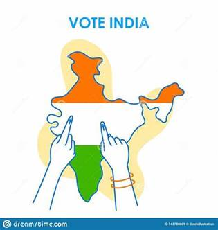

Indian Politics
Countdown to Democracy: Anticipation Builds for Upcoming Elections

1. The Battle of Ideologies
The political landscape is buzzing with a diverse array of ideologies, each
vying for the electorate's attention. Major parties have unveiled their
manifestos, outlining their vision for the nation's future. From economic
reforms to social welfare, these blueprints offer a glimpse into the
policies that could define the next chapter of governance.
2. Regional Dynamics and Alliances
Regional parties are asserting their influence, adding a dynamic layer to
the electoral landscape. The intricacies of regional politics are
manifesting in strategic alliances and coalition negotiations, potentially
impacting the distribution of power in key states. These alliances are
shaping up to be critical determinants in the overall electoral outcome.
3. Voter Engagement and Mobilization
| Citizen participation remains a cornerstone of the democratic process.
Political parties and civil society are ramping up efforts to engage voters
through rallies, town hall meetings, and digital campaigns. The youth
demographic, in particular, is being courted aggressively, as their
collective voice could sway the election in unexpected ways. |
 |
4. Key Contenders and Emerging Leaders
Amidst the frenzy, charismatic leaders are emerging as central figures in
the electoral narrative. Incumbents are seeking to consolidate their
positions, while fresh faces are emerging as contenders, bringing new
perspectives and energizing their respective bases. These individuals could
play a pivotal role in shaping the political discourse in the months to
come.
5. Electoral Dynamics and National Issues
National issues are taking center stage as parties grapple with addressing
concerns such as economic recovery, healthcare, education, and security. The
electorate's evaluation of how parties respond to these challenges will
likely play a defining role in their voting decisions.
6. Pandemic Influence and Voter Safety
The ongoing pandemic continues to influence electoral proceedings,
necessitating innovative approaches to ensure voter safety. Hybrid campaign
strategies, virtual rallies, and stringent health protocols at polling
stations are among the adaptations being employed to safeguard the
democratic process.
7. Public Opinion and Exit Polls
As polling day draws closer, speculation abounds regarding the potential
electoral outcome. Exit polls and public opinion surveys are generating
projections and insights, offering a glimpse into the preferences of the
electorate. However, history reminds us that surprises are not uncommon in
the world of Indian politics.
In Conclusion
As the countdown to the upcoming elections ticks away, India stands at a
crossroads. The choices made by voters will shape the direction of the
nation for years to come. From ideologies and alliances to emerging leaders
and pandemic adaptations, these elections encapsulate the essence of
democracy - a shared journey of shaping the nation's destiny.
Reporting from Jaipur, I'm Prerana Arora for Jaipur News
Legal News
 In a landmark decision that ushers in a new era of inclusivity, India's
legal system has taken a significant stepforward in recognizing and
safeguarding the rights of the LGBTQ+ community. This transformative
development reflects a changing societal mindset and a concerted effort
towards a more inclusive and equal nation.
In a landmark decision that ushers in a new era of inclusivity, India's
legal system has taken a significant stepforward in recognizing and
safeguarding the rights of the LGBTQ+ community. This transformative
development reflects a changing societal mindset and a concerted effort
towards a more inclusive and equal nation.
1. The Historical Verdict
The legal journey towards equality reached a significant milestone as the
Supreme Court of India struck down a colonial-era law that criminalized
consensual same-sex relationships. This historic verdict decriminalized
Section 377 of the Indian Penal Code, a move that was celebrated by human
rights advocates, activists, and the LGBTQ+ community.
2. Reaffirming Human Rights
The decision to overturn Section 377 is being hailed as a triumph for human
rights and personal freedom. The verdict recognizes the right to love and
the autonomy of individuals over their private lives, marking a departure
from a past marked by discrimination and societal stigma.
3. Impact on Society
This legal transformation is expected to have far-reaching implications on
society. It sends a strong message that all individuals, regardless of their
sexual orientation or gender identity, deserve equal protection under the
law. This shift is likely to foster acceptance, reduce discrimination, and
provide a safer environment for the LGBTQ+ community to live authentically.
4. A Progressive Society
The verdict is emblematic of India's journey towards becoming a more
progressive and inclusive society. It demonstrates a willingness to
challenge outdated norms and embrace diversity. As the nation celebrates
this milestone, there is optimism that it will inspire similar conversations
and actions around the world.
5. Addressing Ongoing Challenges
While the decriminalization of same-sex relationships is a monumental
achievement, challenges remain. Issues such as workplace discrimination,
healthcare access, and familial acceptance continue to affect the LGBTQ+
community. Advocates stress the need for comprehensive legal protections and
social reforms to ensure full equality.
6. The Road Ahead
The legal victory is a testament to the tireless efforts of activists and
allies who have campaigned for years to secure equal rights for the LGBTQ+
community. The decision paves the way for further advocacy, education, and
policy changes that will contribute to a more inclusive and just society.
7. Global Significance
India's shift towards recognizing the rights of the LGBTQ+ community carries
global significance. It adds momentum to the global movement for LGBTQ+
rights and sets an example for other nations to follow. The verdict
underscores the importance of upholding fundamental human rights
irrespective of one's sexual orientation or gender identity.
In Conclusion
The striking down of Section 377 marks a turning point in India's legal
landscape and society's perception of LGBTQ+ rights. This landmark decision
signifies a collective step towards a more inclusive, accepting, and
equitable nation. As the nation embraces this historic change, the hope is
that it will inspire a ripple effect of progress and empathy, both within
its borders and beyond.